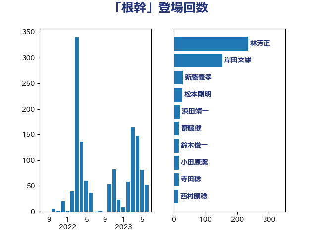

単語「根幹」

| 林芳正 | 自由民主党 | 234 回 |
| 岸田文雄 | 自由民主党 | 154 回 |
| 新藤義孝 | 自由民主党 | 29 回 |
| 松本剛明 | 自由民主党 | 27 回 |
| 浜田靖一 | 自由民主党 | 19 回 |
| 齋藤健 | 自由民主党 | 17 回 |
| 鈴木俊一 | 自由民主党 | 16 回 |
| 小田原潔 | 自由民主党 | 16 回 |
| 寺田稔 | 自由民主党 | 16 回 |
| 西村康稔 | 自由民主党 | 14 回 |
| 小林鷹之 | 自由民主党 | 14 回 |
| 伊藤岳 | 日本共産党 | 11 回 |
| 松野博一 | 自由民主党 | 10 回 |
| 金子恭之 | 自由民主党 | 9 回 |
| 牧山ひろえ | 立憲民主党 | 9 回 |
| 斉藤鉄夫 | 公明党 | 9 回 |
| 塩川鉄也 | 日本共産党 | 9 回 |
| 仁比聡平 | 日本共産党 | 9 回 |
| 赤池誠章 | 自由民主党 | 8 回 |
| 赤嶺政賢 | 日本共産党 | 8 回 |
| 笠井亮 | 日本共産党 | 8 回 |
| 小西洋之 | 立憲民主党 | 8 回 |
| 萩生田光一 | 自由民主党 | 7 回 |
| 津島淳 | 自由民主党 | 7 回 |
| 米山隆一 | 立憲民主党 | 6 回 |
| 山下芳生 | 日本共産党 | 6 回 |
| 小沢雅仁 | 立憲民主党 | 6 回 |
| 音喜多駿 | 日本維新の会 | 5 回 |
| 櫛渕万里 | れいわ新選組 | 5 回 |
| 岩谷良平 | 日本維新の会 | 5 回 |
| 岡本あき子 | 立憲民主党 | 5 回 |
| 古川禎久 | 自由民主党 | 5 回 |
| 高良鉄美 | 無所属 | 4 回 |
| 高橋千鶴子 | 日本共産党 | 4 回 |
| 青山繁晴 | 自由民主党 | 4 回 |
| 阿部司 | 日本維新の会 | 4 回 |
| 金村龍那 | 日本維新の会 | 4 回 |
| 野田聖子 | 自由民主党 | 4 回 |
| 西岡秀子 | 国民民主党 | 4 回 |
| 石橋通宏 | 立憲民主党 | 4 回 |
| 石川大我 | 立憲民主党 | 4 回 |
| 本村伸子 | 日本共産党 | 4 回 |
| 川田龍平 | 立憲民主党 | 4 回 |
| 岸真紀子 | 立憲民主党 | 4 回 |
| 岩渕友 | 日本共産党 | 4 回 |
| 山添拓 | 日本共産党 | 4 回 |
| 山本剛正 | 日本維新の会 | 4 回 |
| 北神圭朗 | 無所属 | 4 回 |
| 北側一雄 | 公明党 | 4 回 |
| 倉林明子 | 日本共産党 | 4 回 |
| 中川貴元 | 自由民主党 | 4 回 |
| 鬼木誠 | 立憲民主党 | 3 回 |
| 青柳陽一郎 | 立憲民主党 | 3 回 |
| 青柳仁士 | 日本維新の会 | 3 回 |
| 門山宏哲 | 自由民主党 | 3 回 |
| 鈴木貴子 | 自由民主党 | 3 回 |
| 重徳和彦 | 立憲民主党 | 3 回 |
| 藤巻健太 | 日本維新の会 | 3 回 |
| 芳賀道也 | 国民民主党 | 3 回 |
| 篠原豪 | 立憲民主党 | 3 回 |
| 福山哲郎 | 立憲民主党 | 3 回 |
| 石垣のりこ | 立憲民主党 | 3 回 |
| 田村智子 | 日本共産党 | 3 回 |
| 猪口邦子 | 自由民主党 | 3 回 |
| 永岡桂子 | 自由民主党 | 3 回 |
| 東徹 | 日本維新の会 | 3 回 |
| 本庄知史 | 立憲民主党 | 3 回 |
| 新垣邦男 | 立憲民主党 | 3 回 |
| 斎藤アレックス | 国民民主党 | 3 回 |
| 市村浩一郎 | 日本維新の会 | 3 回 |
| 岡田直樹 | 自由民主党 | 3 回 |
| 宮本岳志 | 日本共産党 | 3 回 |
| 大串博志 | 立憲民主党 | 3 回 |
| 堀場幸子 | 日本維新の会 | 3 回 |
| 吉田宣弘 | 公明党 | 3 回 |
| 古賀千景 | 立憲民主党 | 3 回 |
| 古賀之士 | 立憲民主党 | 3 回 |
| 勝部賢志 | 立憲民主党 | 3 回 |
| 加藤勝信 | 自由民主党 | 3 回 |
| 住吉寛紀 | 日本維新の会 | 3 回 |
| 伊波洋一 | 無所属 | 3 回 |
| 高橋光男 | 公明党 | 2 回 |
| 馬淵澄夫 | 立憲民主党 | 2 回 |
| 馬場伸幸 | 日本維新の会 | 2 回 |
| 鈴木英敬 | 自由民主党 | 2 回 |
| 鈴木宗男 | 日本維新の会 | 2 回 |
| 金子道仁 | 日本維新の会 | 2 回 |
| 野村哲郎 | 自由民主党 | 2 回 |
| 酒井庸行 | 自由民主党 | 2 回 |
| 赤木正幸 | 日本維新の会 | 2 回 |
| 西村智奈美 | 立憲民主党 | 2 回 |
| 藤岡隆雄 | 立憲民主党 | 2 回 |
| 荒井優 | 立憲民主党 | 2 回 |
| 紙智子 | 日本共産党 | 2 回 |
| 穀田恵二 | 日本共産党 | 2 回 |
| 稲富修二 | 立憲民主党 | 2 回 |
| 石井章 | 日本維新の会 | 2 回 |
| 石井拓 | 自由民主党 | 2 回 |
| 玉木雄一郎 | 国民民主党 | 2 回 |
| 猪瀬直樹 | 日本維新の会 | 2 回 |
| 牧島かれん | 自由民主党 | 2 回 |
| 片山さつき | 自由民主党 | 2 回 |
| 湯原俊二 | 立憲民主党 | 2 回 |
| 渡辺周 | 立憲民主党 | 2 回 |
| 浦野靖人 | 日本維新の会 | 2 回 |
| 浜地雅一 | 公明党 | 2 回 |
| 池下卓 | 日本維新の会 | 2 回 |
| 櫻井周 | 立憲民主党 | 2 回 |
| 柳ヶ瀬裕文 | 日本維新の会 | 2 回 |
| 杉尾秀哉 | 立憲民主党 | 2 回 |
| 木村次郎 | 自由民主党 | 2 回 |
| 有村治子 | 自由民主党 | 2 回 |
| 早稲田ゆき | 立憲民主党 | 2 回 |
| 広瀬めぐみ | 自由民主党 | 2 回 |
| 岡本三成 | 公明党 | 2 回 |
| 山田賢司 | 自由民主党 | 2 回 |
| 山本順三 | 自由民主党 | 2 回 |
| 山下貴司 | 自由民主党 | 2 回 |
| 尾身朝子 | 自由民主党 | 2 回 |
| 小野泰輔 | 日本維新の会 | 2 回 |
| 小熊慎司 | 立憲民主党 | 2 回 |
| 小川淳也 | 立憲民主党 | 2 回 |
| 小宮山泰子 | 立憲民主党 | 2 回 |
| 宮本周司 | 自由民主党 | 2 回 |
| 守島正 | 日本維新の会 | 2 回 |
| 太栄志 | 立憲民主党 | 2 回 |
| 大石あきこ | れいわ新選組 | 2 回 |
| 大塚耕平 | 国民民主党 | 2 回 |
| 堤かなめ | 立憲民主党 | 2 回 |
| 吉田はるみ | 立憲民主党 | 2 回 |
| 吉田とも代 | 日本維新の会 | 2 回 |
| 古川康 | 自由民主党 | 2 回 |
| 加田裕之 | 自由民主党 | 2 回 |
| 佐藤啓 | 自由民主党 | 2 回 |
| 佐藤信秋 | 自由民主党 | 2 回 |
| 伊佐進一 | 公明党 | 2 回 |
| 井上哲士 | 日本共産党 | 2 回 |
| 中司宏 | 日本維新の会 | 2 回 |
| 上杉謙太郎 | 自由民主党 | 2 回 |
| 一谷勇一郎 | 日本維新の会 | 2 回 |
| 黄川田仁志 | 自由民主党 | 1 回 |
| 高橋英明 | 日本維新の会 | 1 回 |
| 高木啓 | 自由民主党 | 1 回 |
| 高木かおり | 日本維新の会 | 1 回 |
| 青木一彦 | 自由民主党 | 1 回 |
| 階猛 | 立憲民主党 | 1 回 |
| 阿部知子 | 立憲民主党 | 1 回 |
| 阿部弘樹 | 日本維新の会 | 1 回 |
| 長谷川淳二 | 自由民主党 | 1 回 |
| 長妻昭 | 立憲民主党 | 1 回 |
| 鎌田さゆり | 立憲民主党 | 1 回 |
| 鈴木馨祐 | 自由民主党 | 1 回 |
| 野田国義 | 立憲民主党 | 1 回 |
| 野中厚 | 自由民主党 | 1 回 |
| 遠藤敬 | 日本維新の会 | 1 回 |
| 進藤金日子 | 自由民主党 | 1 回 |
| 辻清人 | 自由民主党 | 1 回 |
| 輿水恵一 | 公明党 | 1 回 |
| 谷合正明 | 公明党 | 1 回 |
| 谷公一 | 自由民主党 | 1 回 |
| 西銘恒三郎 | 自由民主党 | 1 回 |
| 藤木眞也 | 自由民主党 | 1 回 |
| 藤原崇 | 自由民主党 | 1 回 |
| 藤井比早之 | 自由民主党 | 1 回 |
| 葉梨康弘 | 自由民主党 | 1 回 |
| 菊田真紀子 | 立憲民主党 | 1 回 |
| 若松謙維 | 公明党 | 1 回 |
| 舩後靖彦 | れいわ新選組 | 1 回 |
| 舟山康江 | 国民民主党 | 1 回 |
| 臼井正一 | 自由民主党 | 1 回 |
| 自見はなこ | 自由民主党 | 1 回 |
| 羽田次郎 | 立憲民主党 | 1 回 |
| 緒方林太郎 | 無所属 | 1 回 |
| 緑川貴士 | 立憲民主党 | 1 回 |
| 簗和生 | 自由民主党 | 1 回 |
| 竹詰仁 | 国民民主党 | 1 回 |
| 福島伸享 | 無所属 | 1 回 |
| 福岡資麿 | 自由民主党 | 1 回 |
| 神谷裕 | 立憲民主党 | 1 回 |
| 礒崎哲史 | 国民民主党 | 1 回 |
| 石橋林太郎 | 自由民主党 | 1 回 |
| 石川博崇 | 公明党 | 1 回 |
| 石井浩郎 | 自由民主党 | 1 回 |
| 矢倉克夫 | 公明党 | 1 回 |
| 盛山正仁 | 自由民主党 | 1 回 |
| 畦元将吾 | 自由民主党 | 1 回 |
| 田畑裕明 | 自由民主党 | 1 回 |
| 田村まみ | 国民民主党 | 1 回 |
| 田島麻衣子 | 立憲民主党 | 1 回 |
| 田中健 | 国民民主党 | 1 回 |
| 甘利明 | 自由民主党 | 1 回 |
| 熊谷裕人 | 立憲民主党 | 1 回 |
| 熊田裕通 | 自由民主党 | 1 回 |
| 滝波宏文 | 自由民主党 | 1 回 |
| 源馬謙太郎 | 立憲民主党 | 1 回 |
| 河西宏一 | 公明党 | 1 回 |
| 沢田良 | 日本維新の会 | 1 回 |
| 池畑浩太朗 | 日本維新の会 | 1 回 |
| 水岡俊一 | 立憲民主党 | 1 回 |
| 橘慶一郎 | 自由民主党 | 1 回 |
| 森山裕 | 自由民主党 | 1 回 |
| 梅谷守 | 立憲民主党 | 1 回 |
| 梅村みずほ | 日本維新の会 | 1 回 |
| 柴田巧 | 日本維新の会 | 1 回 |
| 柚木道義 | 立憲民主党 | 1 回 |
| 松本洋平 | 自由民主党 | 1 回 |
| 杉田水脈 | 自由民主党 | 1 回 |
| 杉久武 | 公明党 | 1 回 |
| 末松義規 | 立憲民主党 | 1 回 |
| 木原誠二 | 自由民主党 | 1 回 |
| 日下正喜 | 公明党 | 1 回 |
| 掘井健智 | 日本維新の会 | 1 回 |
| 平沼正二郎 | 自由民主党 | 1 回 |
| 平林晃 | 公明党 | 1 回 |
| 平木大作 | 公明党 | 1 回 |
| 川合孝典 | 国民民主党 | 1 回 |
| 岡田克也 | 立憲民主党 | 1 回 |
| 山谷えり子 | 自由民主党 | 1 回 |
| 山田太郎 | 自由民主党 | 1 回 |
| 山田勝彦 | 立憲民主党 | 1 回 |
| 山本博司 | 公明党 | 1 回 |
| 山崎正恭 | 公明党 | 1 回 |
| 山口晋 | 自由民主党 | 1 回 |
| 山口俊一 | 自由民主党 | 1 回 |
| 尾辻秀久 | 無所属 | 1 回 |
| 小林史明 | 自由民主党 | 1 回 |
| 小倉將信 | 自由民主党 | 1 回 |
| 奥野総一郎 | 立憲民主党 | 1 回 |
| 太田房江 | 自由民主党 | 1 回 |
| 大野泰正 | 自由民主党 | 1 回 |
| 大島敦 | 立憲民主党 | 1 回 |
| 大岡敏孝 | 自由民主党 | 1 回 |
| 大塚拓 | 自由民主党 | 1 回 |
| 大口善徳 | 公明党 | 1 回 |
| 塩村あやか | 立憲民主党 | 1 回 |
| 城内実 | 自由民主党 | 1 回 |
| 坂本祐之輔 | 立憲民主党 | 1 回 |
| 和田有一朗 | 日本維新の会 | 1 回 |
| 和田政宗 | 自由民主党 | 1 回 |
| 吉良州司 | 無所属 | 1 回 |
| 吉川沙織 | 立憲民主党 | 1 回 |
| 古川元久 | 国民民主党 | 1 回 |
| 前原誠司 | 国民民主党 | 1 回 |
| 伊藤渉 | 公明党 | 1 回 |
| 伊藤忠彦 | 自由民主党 | 1 回 |
| 伊藤孝江 | 公明党 | 1 回 |
| 伊藤孝恵 | 国民民主党 | 1 回 |
| 伊藤俊輔 | 立憲民主党 | 1 回 |
| 伊東良孝 | 自由民主党 | 1 回 |
| 今井絵理子 | 自由民主党 | 1 回 |
| 井野俊郎 | 自由民主党 | 1 回 |
| 井上信治 | 自由民主党 | 1 回 |
| 中川正春 | 立憲民主党 | 1 回 |
| 中川康洋 | 公明党 | 1 回 |
| 上月良祐 | 自由民主党 | 1 回 |
| 上川陽子 | 自由民主党 | 1 回 |
| ながえ孝子 | 無所属 | 1 回 |
| たがや亮 | れいわ新選組 | 1 回 |